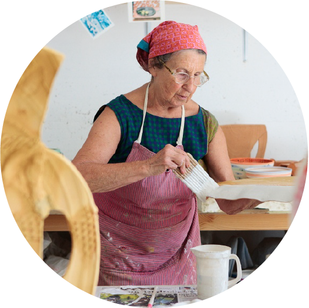

About Kiln Koffee
Kiln Koffee is a small company owned coffee shop. They source all of their produce locally and their coffee beans are ethically sourced from South and Central America, roasted in house. Kiln Koffee strives to be sus- tainable, therefore all to-go cups are biodegradable, and all in-house ceramic mugs and cups are created from the owners in their own studio. There is a ceramic studio that is located on-site and offers classes to learn more about the production and creation of pottery, along with a shop for purchasing resident artists’ work.
Meet The Owner
Hi, My name is Beverly Goode and I am the owner and creator of Kiln Koffee! I have been creating pottery for over twenty years and have always wanted to own a coffee shop. After having this dream I wanted to make it a reality.
